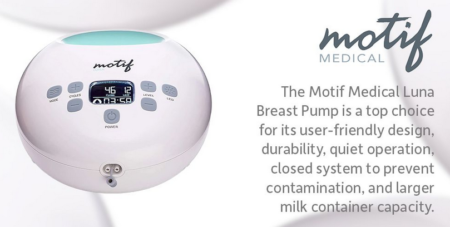

Prism Post
 As we age, it becomes increasingly important to prioritize our bone health. Fractures and osteoporosis can have a significant impact on our quality of life, limiting our mobility and independence. In this article, we will delve into the secrets of preventing fractures and osteoporosis in old age. We will explore the factors that affect bone health, understand the concept of osteoporosis, and discuss various preventive measures. By the end of this article, you will be equipped with valuable knowledge to take proactive steps towards maintaining strong and healthy bones. Let’s dive in!
As we age, it becomes increasingly important to prioritize our bone health. Fractures and osteoporosis can have a significant impact on our quality of life, limiting our mobility and independence. In this article, we will delve into the secrets of preventing fractures and osteoporosis in old age. We will explore the factors that affect bone health, understand the concept of osteoporosis, and discuss various preventive measures. By the end of this article, you will be equipped with valuable knowledge to take proactive steps towards maintaining strong and healthy bones. Let’s dive in!
Understanding Aging and Bone Health
As we age, our bone health becomes increasingly important. The aging process can have a significant impact on the strength and density of our bones, making us more susceptible to fractures and conditions like osteoporosis. In this section, we will explore the factors that affect bone health in old age and gain a deeper understanding of their implications.
Factors Affecting Bone Health in Old Age
- Decreased production of bone tissue: As we grow older, our bodies naturally produce less bone tissue. This decline in bone formation can lead to a decrease in bone density and strength, making our bones more fragile and prone to fractures.
- Hormonal changes and their impact on bone density: Hormonal changes that occur with age can also have a significant impact on bone health. For example, postmenopausal women experience a decrease in estrogen levels, which can accelerate the loss of bone mass and increase the risk of osteoporosis.
- Lifestyle factors such as diet and exercise: Our lifestyle choices play a crucial role in maintaining optimal bone health as we age. A well-balanced diet that includes adequate amounts of calcium, vitamin D, and other essential nutrients is essential for supporting healthy bones. Regular exercise, especially weight-bearing exercises like walking or dancing, helps to strengthen bones and improve overall bone density.
- The role of genetics in bone health: Genetics also play a role in determining our susceptibility to bone-related conditions. Some individuals may have a genetic predisposition to low bone density or osteoporosis, which increases their risk of developing fractures later in life.
Understanding these factors is vital for effectively preventing fractures and osteoporosis in old age. By addressing each aspect and making proactive choices, we can promote better bone health throughout our lives.
“Taking care of your bones is not just about preventing fractures; it’s about maintaining your independence and quality of life as you age.”
In the next section, we will delve deeper into the specifics of osteoporosis, including its definition, risk factors, and the consequences of untreated or poorly managed osteoporosis.
Understanding Osteoporosis
As we age, our bone health becomes a crucial aspect of overall well-being. Aging affects bone health in various ways, and one common condition that older adults may face is osteoporosis.
- Definition and explanation of osteoporosis: Osteoporosis is a progressive bone disease characterized by low bone density and deterioration of bone tissue. It weakens the bones and makes them more susceptible to fractures. The word “osteoporosis” literally means “porous bones.”
- Risk factors for developing osteoporosis: Several factors increase the risk of developing osteoporosis, including age, gender (women are more prone), family history, hormonal changes (such as menopause in women), certain medical conditions (like rheumatoid arthritis or anorexia nervosa), and long-term use of medications like corticosteroids.
- Consequences of untreated or poorly managed osteoporosis: If left untreated or poorly managed, osteoporosis can lead to serious consequences. Fractures are the most common complication, with hip fractures being particularly debilitating. These fractures can result in chronic pain, loss of independence, reduced quality of life, and even increased mortality rates.
Understanding the impact of aging on bone health and the increased risk of developing osteoporosis is crucial for older adults. Taking care of bone health through preventive measures can help reduce the risk of fractures and maintain overall well-being as we grow older.
Remember, prevention is key when it comes to bone health and avoiding the complications associated with osteoporosis.
Preventing Fractures and Osteoporosis
When it comes to maintaining strong and healthy bones, preventing fractures and osteoporosis should be a top priority. By taking proactive steps to support bone health, you can significantly reduce the risk of fractures and the development of osteoporosis. In this section, we will explore the role of diet and nutrition in promoting bone health and discuss the importance of incorporating specific foods, recommended daily intake of calcium and vitamin D, as well as the role of supplements in supporting bone health.
Diet and Nutrition for Bone Health
Proper nutrition plays a crucial role in maintaining strong bones throughout your life. Including foods that are rich in essential nutrients can help strengthen your bones and protect against fractures. Here are some specific foods that promote bone health:
- Dairy products: Milk, cheese, and yogurt are excellent sources of calcium, a key nutrient for bone health. Aim for low-fat or non-fat options to minimize saturated fat intake.
- Leafy green vegetables: Spinach, kale, broccoli, and other leafy greens are packed with calcium, as well as other essential vitamins and minerals.
- Salmon: Fatty fish like salmon is an excellent source of vitamin D and omega-3 fatty acids, both of which are beneficial for bone health.
- Fortified foods: Many food products such as cereals, orange juice, and plant-based milk alternatives are fortified with calcium and vitamin D to help you meet your daily requirements.
Apart from including these specific foods in your diet, it’s important to pay attention to your recommended daily intake of calcium and vitamin D. The National Osteoporosis Foundation recommends 1000-1200 mg of calcium per day for adults over 50 years old and at least 600 IU (international units) of vitamin D daily. However, individual needs may vary depending on factors such as age, gender, and overall health. Consulting with a healthcare professional can help you determine your specific requirements.
In addition to obtaining these nutrients from food sources, supplements can also play a role in supporting bone health. Calcium and vitamin D supplements are commonly recommended for individuals who may have difficulty meeting their daily requirements through diet alone. However, it’s important to consult with a healthcare professional before starting any new supplements to ensure they are appropriate for your specific needs.
Remember, taking care of your bones through a balanced diet and proper nutrition is an essential step towards preventing fractures and osteoporosis. In the next section, we will explore the importance of exercise for strong bones and discuss the types of exercises that are beneficial for bone health. Stay tuned!
“A well-balanced diet rich in calcium and vitamin D is the foundation for strong bones and can help prevent fractures and osteoporosis.”
Exercise for Strong Bones
Maintaining strong and healthy bones is crucial in preventing fractures and osteoporosis. In addition to a balanced diet rich in calcium and vitamin D, regular exercise plays a vital role in keeping our bones strong and resilient.
Here are some key points to consider when it comes to exercise for strong bones:
- Types of exercises: Engaging in weight-bearing exercises is particularly beneficial for bone health. These include activities such as walking, jogging, dancing, hiking, and stair climbing. These exercises put stress on the bones, which helps stimulate the production of new bone tissue.
- Recommended frequency and intensity: Aim for at least 150 minutes of moderate-intensity aerobic exercise per week, or 75 minutes of vigorous-intensity aerobic exercise. It’s also important to incorporate strength training exercises at least twice a week to further enhance bone density.
- Incorporating weight-bearing exercises: Make sure to include weight-bearing exercises into your fitness routine. This can be as simple as taking daily walks or joining a dance class. You can also try incorporating resistance training using weights or resistance bands to further strengthen your bones.
Regular exercise not only helps in preventing fractures but also improves balance and coordination, reducing the risk of falls. Remember to consult with your healthcare professional before starting any new exercise regimen, especially if you have any underlying health conditions.
In the next section, we will explore the role of medications and supplements in preventing fractures and osteoporosis. Stay tuned!
“Keep your bones strong and healthy with regular exercise. Incorporate weight-bearing activities into your routine like dancing or hiking. Don’t forget about strength training! Aim for at least 150 minutes of moderate-intensity aerobic exercise per week.”
Medications and Supplements
Preventing fractures and osteoporosis is a crucial aspect of maintaining bone health as we age. While diet and exercise play a vital role in this process, medications and supplements can also contribute significantly to preventing fractures and promoting bone strength.
- Common medications used to prevent fractures and treat osteoporosis: There are several medications available that can help prevent fractures and manage osteoporosis effectively. These may include bisphosphonates, selective estrogen receptor modulators (SERMs), hormone replacement therapy (HRT), and denosumab. These medications work by either slowing down bone loss or increasing bone density.
- The role of supplements such as calcium and vitamin D: Calcium and vitamin D are essential nutrients for bone health. Calcium helps in the formation and maintenance of strong bones, while vitamin D aids in the absorption of calcium from the diet. It is important to ensure an adequate intake of both these nutrients through diet or supplementation.
Did you know? The recommended daily intake of calcium for adults aged 50 and above is 1200 mg, while the recommended daily intake of vitamin D is 800-1000 IU.
- Consulting with a healthcare professional before starting any new medications or supplements: It is crucial to consult with a healthcare professional before initiating any new medications or supplements for preventing fractures and osteoporosis. They can assess your individual needs, evaluate potential interactions or side effects, and recommend the most appropriate options based on your specific health condition.
Remember, while medications and supplements can be beneficial, they should always be used under medical guidance to ensure safety and effectiveness in preventing fractures and promoting overall bone health.
In the next section, we will explore the impact of lifestyle factors such as smoking, alcohol consumption, maintaining a healthy weight, avoiding falls, and accidents on bone health. Stay tuned!
Lifestyle Factors
When it comes to maintaining strong and healthy bones in old age, lifestyle factors play a crucial role. By adopting certain habits and making conscious choices, you can significantly reduce the risk of fractures and osteoporosis. Let’s explore three important lifestyle factors that contribute to optimal bone health.
- The Impact of Smoking and Alcohol Consumption on Bone Health: It’s no secret that smoking and excessive alcohol consumption have detrimental effects on overall health, but they also negatively impact bone health. Smoking reduces blood flow to the bones, impairs the absorption of calcium, and interferes with the production of new bone tissue. Similarly, heavy alcohol consumption interferes with the body’s ability to absorb calcium and affects hormone levels that regulate bone density.
- Maintaining a Healthy Weight for Optimal Bone Health: Maintaining a healthy weight is not only important for cardiovascular health but also for bone health. Being underweight increases the risk of fractures as bones become weaker due to insufficient support. On the other hand, being overweight or obese can put excess strain on the bones, leading to increased wear and tear. Striving for a balanced weight through a nutritious diet and regular exercise can help promote optimal bone health.
- Avoiding Falls and Preventing Accidents: Falls are a common cause of fractures in older adults, so taking steps to prevent accidents is crucial. Simple measures like removing tripping hazards at home, installing grab bars in bathrooms, using non-slip mats, and ensuring proper lighting can significantly reduce the risk of falls. Regular exercise that improves balance and strength, such as tai chi or yoga, can also help prevent falls by enhancing stability.
By being mindful of these lifestyle factors, you can greatly enhance your bone health as you age. Remember, small changes today can make a big difference in preventing fractures and osteoporosis tomorrow.
“Your habits today will shape your bone health tomorrow.”
Regular Bone Health Check-ups
Regular check-ups play a crucial role in monitoring and maintaining optimal bone health. By scheduling routine appointments with your healthcare professional, you can stay proactive in preventing fractures and osteoporosis. Here are some key reasons why regular check-ups are important:
- Monitoring bone health: Regular check-ups allow healthcare professionals to assess your bone density and identify any potential issues early on. Through screenings and tests, they can determine the strength and density of your bones, helping to detect osteoporosis or other conditions that may put you at risk for fractures.
- Screening tests for osteoporosis: During check-ups, your healthcare provider may recommend specific screening tests to evaluate your bone health. These tests, such as Dual-Energy X-ray Absorptiometry (DXA) scans, measure bone density and help identify the presence of osteoporosis or low bone mass. Early detection enables timely intervention and treatment.
- Discussing bone health concerns: Regular check-ups provide an opportunity to discuss any concerns or questions you have about your bone health. Your healthcare provider can offer guidance on lifestyle modifications, exercise routines, dietary changes, and potential medications or supplements that may be beneficial for maintaining strong bones.
It is essential to prioritize regular check-ups as part of your overall strategy for preventing fractures and osteoporosis. By staying proactive with your bone health, you can take necessary steps to maintain strong and healthy bones throughout your life.
Conclusion
- In conclusion, maintaining good bone health is crucial as we age. By understanding the factors that affect bone health, such as decreased production of bone tissue, hormonal changes, lifestyle factors like diet and exercise, and genetics, we can take proactive steps to prevent fractures and osteoporosis.
- It is important to prioritize a diet rich in specific foods that promote bone health, ensuring the recommended daily intake of calcium and vitamin D. Supplements can also play a role in supporting bone health, but consulting with a healthcare professional is advised.
- Regular exercise, especially weight-bearing exercises, can help strengthen bones and reduce the risk of fractures. Alongside this, paying attention to lifestyle factors such as avoiding smoking and excessive alcohol consumption, maintaining a healthy weight, and preventing falls can further support optimal bone health.
- Lastly, regular check-ups with healthcare professionals are essential for monitoring bone health. Screening tests for osteoporosis can identify potential issues early on. Remember to discuss any bone health concerns you may have during these check-ups.
By implementing these preventive measures and taking care of our bone health, we can enjoy a strong and fracture-free life as we age. Don’t wait until it’s too late; start prioritizing your bone health today!
 If you have diabetes, the health of your feet is incredibly important. Compression socks, or foot stockings, are an excellent way to boost the health of your feet and reduce the risk of complications. Mediven compression socks are designed specifically for people with diabetes and those with peripheral arterial disease (PAD). They offer superior comfort, durability and support. By using Mediven compression socks, you can help protect your feet, improve circulation and reduce swelling.
If you have diabetes, the health of your feet is incredibly important. Compression socks, or foot stockings, are an excellent way to boost the health of your feet and reduce the risk of complications. Mediven compression socks are designed specifically for people with diabetes and those with peripheral arterial disease (PAD). They offer superior comfort, durability and support. By using Mediven compression socks, you can help protect your feet, improve circulation and reduce swelling.
Understanding Diabetes and Peripheral Arterial Disease
Living with diabetes comes with its own set of challenges and concerns. One major concern is the health of your feet. Diabetes can lead to peripheral arterial disease (PAD), which affects the blood flow to your limbs, particularly the legs and feet. This can result in poor circulation and a higher risk of foot complications.
Peripheral arterial disease occurs when the arteries become narrowed or blocked by plaque buildup. High blood sugar levels in diabetics can contribute to this process. When blood flow is restricted, it can lead to numbness, tingling, pain, and slow healing in the feet.
It is crucial for diabetics to be aware of the potential complications and take proactive steps to maintain foot health. This includes regular check-ups, proper hygiene, and wearing appropriate footwear. One effective way to promote foot health and reduce the risk of complications is by wearing Mediven compression socks.
Mediven compression socks are specially designed for diabetics and those with peripheral arterial disease. They provide graduated compression, meaning the pressure is highest at the ankle and decreases as it moves up the leg. This helps to improve circulation, reduce swelling, and prevent blood from pooling in the feet.
By wearing Mediven compression socks, you can give your feet the support they need and minimize the risk of foot complications. Don’t let diabetes hold you back — take control of your foot health with Mediven compression socks.
Importance of Foot Health in Diabetic Patients
Foot health is of utmost importance for individuals with diabetes. Due to the complications that diabetes can cause, such as peripheral arterial disease (PAD), the feet are particularly vulnerable and require extra care and attention. Maintaining proper foot health is crucial for preventing serious complications and improving overall well-being.
Diabetic patients often experience reduced blood flow to the extremities, including the feet. This can lead to numbness, tingling, and poor wound healing, increasing the risk of foot ulcers and infections. Without proper foot care, these complications can progress and potentially lead to amputation.
Taking care of your feet as a diabetic involves regular foot inspections, practicing good hygiene, wearing proper footwear, and managing blood sugar levels. In addition, wearing Mediven compression socks can play a significant role in foot health. These compression socks are specifically designed to improve circulation and reduce swelling in the feet.
By applying graduated pressure, Mediven compression socks help to promote blood flow from the ankles upward, preventing blood pooling and enhancing overall circulation. This can alleviate discomfort, reduce swelling, and lower the risk of complications.
Prioritizing foot health is crucial for individuals with diabetes. Incorporating Mediven compression socks into your daily routine can provide the support and protection your feet need, enabling you to maintain an active and fulfilling life.
How Mediven Compression Socks Can Help
Mediven compression socks are an essential tool in maintaining optimal foot health for individuals with diabetes and peripheral arterial disease (PAD). These specialized socks are designed to provide the support and protection your feet need to prevent complications and promote overall well-being.
One of the key ways that Mediven compression socks can help is by improving circulation. The graduated compression technology applies pressure to the ankles and gradually decreases as it moves up the leg. This gentle pressure helps to promote blood flow, preventing pooling in the feet and reducing swelling.
By wearing Mediven compression socks, you can also minimize the risk of foot ulcers and infections. These socks provide a barrier of protection, preventing external irritants from entering any existing wounds or sores. The snug fit of the socks also reduces friction and rubbing, minimizing the chances of developing blisters or calluses.
Additionally, Mediven compression socks provide superior comfort and durability. They are designed to stay in place and maintain their effectiveness throughout the day. Made from high-quality materials, they are built to last and withstand everyday wear and tear.
Don’t compromise on your foot health. With Mediven compression socks, you can give your feet the care they deserve, ensuring that you can continue to live an active and fulfilling life.
Features of Mediven Angio Compression Stockings
Mediven Angio Compression Stockings offer a range of features that make them an ideal choice for individuals with diabetes and peripheral arterial disease (PAD). These compression stockings are designed with the specific needs of diabetic feet in mind, providing exceptional comfort and support.
One key feature of Mediven Angio Compression Stockings is their graduated compression technology. This means that the pressure applied to the feet and legs is highest at the ankle and gradually decreases as it moves up the leg. This promotes blood flow, reduces swelling, and prevents blood from pooling in the feet.
Another important feature is their durability. Mediven Angio Compression Stockings are made from high-quality materials that are built to last, even with everyday wear and tear. They maintain their effectiveness and shape over time, providing long-lasting support for your feet.
Additionally, these compression stockings offer superior comfort. They are designed to stay in place throughout the day, ensuring that you can go about your activities without any discomfort or irritation.
With features like graduated compression technology, durability, and comfort, Mediven Angio Compression Stockings are an excellent choice for diabetic individuals looking to improve foot health and reduce the risk of complications. Invest in the care of your feet with Mediven Angio Compression Stockings and experience the difference they can make in your daily life.
How to Choose the Right Compression Level for You
Choosing the right compression level for your Mediven compression socks is crucial to ensure maximum effectiveness and comfort. The level of compression refers to the amount of pressure the socks exert on your legs and feet. It is important to note that different individuals have different needs when it comes to compression levels.
To choose the right compression level, you should consider factors such as the severity of your diabetes or peripheral arterial disease (PAD), your personal comfort level, and the advice of your healthcare professional. Generally, compression levels range from mild to firm, with mild providing the least amount of pressure and firm offering the highest.
Mild compression (8-15 mmHg) is typically recommended for individuals with mild swelling or discomfort. Moderate compression (15-20 mmHg) is suitable for those with moderate swelling, varicose veins, or mild to moderate PAD. Firm compression (20-30 mmHg) is often recommended for individuals with severe swelling, venous insufficiency, or severe PAD.
Remember, it is essential to consult with your healthcare professional before choosing a compression level. They will be able to evaluate your specific needs and guide you in selecting the right level of compression to optimize the benefits of Mediven compression socks for your foot health.
How to Wear and Care for Your Mediven Compression Socks
Properly wearing and caring for your Mediven compression socks is essential to maximize their effectiveness and ensure long-lasting use. Here are some tips on how to wear and care for your compression socks:
1. Putting them on: Roll up your Mediven compression socks, then gently pull them onto your feet and legs, ensuring a snug fit. Make sure there are no wrinkles or folds, as they can cause discomfort and affect the compression.
2. Daily wear: Wear your compression socks throughout the day, removing them only at night. This continuous use is crucial to maintain proper blood flow and reduce swelling.
3. Washing: Follow the care instructions provided with your Mediven compression socks. Typically, they can be hand or machine washed with mild detergent. Avoid using bleach or fabric softeners, as they can damage the fabric.
4. Drying: After washing, air-dry your compression socks. Avoid wringing or twisting them, as it can stretch the fabric and compromise their effectiveness.
5. Replace when necessary: Over time, the elastic fibers of compression socks may lose their strength. If you notice a decrease in compression or signs of wear and tear, it’s time to replace them.
By following these simple guidelines, you can ensure that your Mediven compression socks provide optimal support and protection for your diabetic feet. Remember, proper wear and care are essential for maintaining foot health and reducing the risk of complications.
Content blocked
Please accept cookies in the consent banner to view this content.
 Today is World Lymphoma Awareness Day, and it’s important to know the facts about this type of cancer. Lymphoma is a cancer of the lymphatic system, which is part of the immune system and is made up of vessels, lymph nodes, and organs. It is important to be aware of the facts about lymphoma in order to better understand and support those who are affected by it. Here are 5 key facts about lymphoma that everyone should know.
Today is World Lymphoma Awareness Day, and it’s important to know the facts about this type of cancer. Lymphoma is a cancer of the lymphatic system, which is part of the immune system and is made up of vessels, lymph nodes, and organs. It is important to be aware of the facts about lymphoma in order to better understand and support those who are affected by it. Here are 5 key facts about lymphoma that everyone should know.
1) What is Lymphoma?
Lymphoma is a type of cancer that affects the lymphatic system, which is a crucial part of our immune system. The lymphatic system is made up of vessels, lymph nodes, and organs such as the spleen and thymus. It plays a vital role in fighting off infections and diseases, but when lymphocytes, a type of white blood cell, start to grow and divide uncontrollably, lymphoma can develop.
Lymphoma is a broad term that encompasses several different subtypes, the two main ones being Hodgkin lymphoma (HL) and non-Hodgkin lymphoma (NHL). HL is characterized by the presence of abnormal Reed-Sternberg cells, while NHL is more common and encompasses various subtypes.
The exact cause of lymphoma is still unknown, but certain risk factors have been identified. These include a weakened immune system, exposure to certain chemicals or radiation, infection with certain viruses (such as the Epstein-Barr virus), and a family history of lymphoma.
The signs and symptoms of lymphoma can vary depending on the subtype and stage of the disease. Common symptoms include swollen lymph nodes, fever, night sweats, unexplained weight loss, fatigue, and itching. However, it’s important to note that these symptoms can also be caused by other conditions, so a proper medical evaluation is necessary for an accurate diagnosis.
In terms of treatment, the approach depends on the subtype and stage of lymphoma. It may include chemotherapy, radiation therapy, immunotherapy, targeted therapy, or stem cell transplant. Early detection and timely treatment can greatly improve the chances of successful outcomes.
2) Signs and Symptoms of Lymphoma
Lymphoma is a complex and diverse cancer, and the signs and symptoms can vary depending on the subtype and stage of the disease. However, there are some common signs and symptoms that can indicate the presence of lymphoma. It’s important to note that these symptoms can also be caused by other conditions, so it’s crucial to consult a healthcare professional for an accurate diagnosis.
One of the most common signs of lymphoma is swollen lymph nodes. Lymph nodes are small, bean-shaped organs that are part of the lymphatic system. When lymphoma develops, the lymph nodes may become enlarged, firm, and tender to the touch.
Fever is another symptom that may be associated with lymphoma. It is often accompanied by night sweats, which can be drenching and interrupt sleep. Unexplained weight loss, fatigue, and itching are also potential signs of lymphoma.
In some cases, lymphoma can affect other organs, leading to additional symptoms. For example, if lymphoma affects the bone marrow, it may result in anemia, which can cause fatigue and shortness of breath.
It’s important to be aware of these signs and symptoms, as early detection can greatly improve treatment outcomes. If you experience any persistent or concerning symptoms, it’s important to consult a healthcare professional for further evaluation and diagnosis.
3) Types of Lymphoma
Lymphoma is a complex and diverse cancer that can manifest in various subtypes. Understanding the different types of lymphoma is crucial in order to navigate the complexities of this disease. Here are some of the main types of lymphoma that everyone should know about.
One of the main categories of lymphoma is Hodgkin lymphoma (HL). This type of lymphoma is characterized by the presence of abnormal Reed-Sternberg cells in the lymph nodes. Hodgkin lymphoma usually starts in a single lymph node or a group of lymph nodes, and can spread to nearby lymph nodes or other organs if not treated.
Non-Hodgkin lymphoma (NHL) is another major category, and it encompasses a wide range of subtypes. NHL can start in either B cells or T cells, which are types of lymphocytes. This type of lymphoma can occur in any part of the body where there is lymphatic tissue, such as the lymph nodes, spleen, bone marrow, or gastrointestinal tract.
Some of the common subtypes of NHL include diffuse large B-cell lymphoma, follicular lymphoma, mantle cell lymphoma, and marginal zone lymphoma. Each subtype has unique characteristics and requires tailored treatment approaches.
Other less common types of lymphoma include cutaneous lymphoma, which affects the skin, and primary central nervous system lymphoma, which affects the brain and spinal cord.
Understanding the different types of lymphoma is essential for both patients and their loved ones. It allows for better comprehension of the specific challenges and treatment options associated with each subtype. It’s important to work closely with healthcare professionals to determine the most appropriate course of action for managing lymphoma based on its type and stage.
4) Causes and Risk Factors of Lymphoma
Lymphoma is a complex disease, and while the exact causes are still unknown, certain risk factors have been identified. Understanding these risk factors can help raise awareness and potentially aid in prevention efforts.
One of the main risk factors for lymphoma is a weakened immune system. This can occur due to certain medical conditions, such as HIV/AIDS or autoimmune diseases, or as a result of treatments like organ transplantation. When the immune system is compromised, it may not be able to effectively identify and destroy abnormal cells, leading to the development of lymphoma.
Exposure to certain chemicals and radiation has also been linked to an increased risk of lymphoma. For example, individuals who work with pesticides or certain industrial chemicals may have a higher likelihood of developing the disease. Additionally, exposure to ionizing radiation, such as that from radiation therapy or nuclear accidents, can increase the risk.
Infection with certain viruses has also been associated with lymphoma. The Epstein-Barr virus, for instance, has been linked to the development of Hodgkin lymphoma and some forms of non-Hodgkin lymphoma. Other viruses, such as human T-cell leukemia virus (HTLV-1) and hepatitis C, may also increase the risk.
Finally, a family history of lymphoma can play a role in determining an individual’s susceptibility to the disease. While the exact genetic factors involved are still being studied, having a close relative with lymphoma can increase the risk.
It’s important to remember that having one or more of these risk factors does not guarantee the development of lymphoma. Conversely, not having any known risk factors does not mean that a person cannot develop the disease. However, understanding these risk factors can help raise awareness and prompt individuals to make informed decisions regarding their health.
5) Treatment and Prevention of Lymphoma
Treatment and prevention of lymphoma play crucial roles in improving outcomes and reducing the impact of this disease. The treatment approach for lymphoma depends on the subtype and stage of the cancer. There are several options available, and healthcare professionals work closely with patients to determine the most appropriate course of action.
One of the main treatment modalities for lymphoma is chemotherapy, which involves the use of drugs to kill cancer cells. Radiation therapy may also be utilized to target and destroy cancer cells. Immunotherapy is another promising treatment option that helps to boost the body’s immune system to fight cancer cells. Additionally, targeted therapy focuses on specific genetic or molecular characteristics of the cancer cells to inhibit their growth.
Prevention efforts for lymphoma primarily revolve around reducing known risk factors. This includes maintaining a healthy immune system through regular exercise, a balanced diet, and sufficient sleep. Avoiding exposure to chemicals and radiation, such as those found in certain occupations or medical procedures, can also help reduce the risk. Practicing safe behaviors, such as avoiding risky sexual practices or using protective measures to prevent infections, may also play a role in prevention.
It’s important to note that early detection is key in improving treatment outcomes for lymphoma. Regular medical check-ups and screenings can help identify any potential signs or symptoms early on, allowing for prompt intervention and management. Staying informed about the latest developments in lymphoma research and treatment options is also beneficial, as it enables individuals to make educated decisions about their healthcare.
Overall, by prioritizing both treatment and prevention efforts, we can work towards better outcomes for individuals affected by lymphoma. Collaborating with healthcare professionals, staying proactive about personal health, and raising awareness about lymphoma can contribute to a future where this disease has a reduced impact on individuals and communities.
Content blocked
Please accept cookies in the consent banner to view this content.

Are you a nursing mother looking for the best breast pump to meet your needs? Look no further! The Motif Luna and Motif Duo breast pumps offer an array of advantages to make pumping more efficient, comfortable, and even enjoyable. From adjustable suction levels to customizable programs, the Motif Luna and Motif Duo provide many great features to make sure you and your baby get the best out of your pumping experience. Keep reading to discover the top benefits of the Motif Luna and Motif Duo breast pumps.
What to Consider When Choosing a Breast Pump
Choosing the right breast pump is essential for nursing mothers to ensure a comfortable and efficient pumping experience. With so many options available in the market, it can be overwhelming to make the right decision. That’s why we’re here to help!
When considering a breast pump, there are a few factors to keep in mind. Firstly, think about your pumping needs. Are you planning to pump exclusively or just occasionally? This will determine the type of pump you need — a hospital-grade pump for frequent pumping or a smaller portable one for occasional use.
Secondly, consider the pump’s suction strength and adjustable settings. A pump with adjustable suction levels allows you to find the right balance between comfort and efficiency. Look for pumps that mimic a baby’s natural nursing pattern to encourage better milk flow.
Next, think about portability and convenience. If you’re constantly on the go, a lightweight and compact pump that is easy to transport may be a priority. Look for pumps with a battery-operated option or a rechargeable battery for flexibility.
Finally, don’t forget about hygiene and ease of cleaning. Opt for pumps with easily detachable parts and dishwasher-safe components for hassle-free maintenance.
By considering these factors, you can make an informed decision and choose the best breast pump that suits your lifestyle and pumping needs. Stay tuned to learn more about the Motif Luna and Motif Duo breast pumps, their key features, and the benefits they offer for nursing mothers like you.
Understanding the Motif Luna Breast Pump
The Motif Luna Breast Pump is a game-changer for nursing mothers who want a comfortable and efficient pumping experience. This high-quality pump is designed with your needs in mind, providing a range of features that make it stand out from the crowd.
First and foremost, the Luna Breast Pump is incredibly easy to use. Its intuitive controls and LCD screen make it simple to navigate through the various settings and programs. With just a few button presses, you can adjust the suction levels, change the pumping rhythm, and even save your favorite settings for future use. This means that you can personalize your pumping experience to suit your comfort and milk flow.
Another great feature of the Motif Luna Breast Pump is its quiet operation. No one wants a noisy pump disturbing the peace, especially during those late-night pumping sessions. The Luna Breast Pump ensures a discreet and silent pumping experience, allowing you to pump in peace without waking the baby or disturbing others around you.
Furthermore, the Luna Breast Pump is designed for maximum comfort. Its soft silicone flanges provide a gentle and snug fit, preventing discomfort and ensuring an effective seal. The pump’s closed-system design also helps to prevent milk from backing up into the tubing, reducing the risk of contamination and making cleaning a breeze.
In summary, the Motif Luna Breast Pump is a reliable and user-friendly option for nursing mothers. With its intuitive controls, quiet operation, and comfortable design, it offers an exceptional pumping experience that will make your life as a nursing mother much easier. Say goodbye to discomfort and hello to efficiency with the Motif Luna Breast Pump!
Key Features and Benefits of the Motif Luna
The Motif Luna Breast Pump is packed with fantastic features that make it a top choice for nursing mothers. One of its key benefits is its customizable suction levels, allowing you to find the perfect balance between comfort and efficiency. With just a few simple button presses, you can easily adjust the suction to meet your individual needs.
Another standout feature of the Luna Breast Pump is its quiet operation. Gone are the days of noisy and disruptive pumping sessions. The Luna Breast Pump ensures a peaceful and discreet experience, allowing you to pump without disturbing others around you.
Additionally, the Luna Breast Pump prioritizes comfort with its soft silicone flanges. These provide a gentle and secure fit, preventing discomfort during pumping sessions. The closed-system design of the pump also makes cleaning a breeze, as it helps to prevent milk from backing up into the tubing.
With its user-friendly controls, quiet operation, and emphasis on comfort, the Motif Luna Breast Pump is sure to make your pumping journey a breeze. Say goodbye to discomfort and hello to efficiency with the Motif Luna Breast Pump!
Understanding the Motif Duo Breast Pump
The Motif Duo Breast Pump is another exceptional option for nursing mothers who want a reliable and efficient pumping experience. This dual electric breast pump offers a range of features that make it a standout choice in the market.
The Motif Duo Breast Pump is designed to provide maximum comfort and convenience. Its compact and lightweight design makes it perfect for moms on the go. Whether you’re traveling, at work, or running errands, the Duo Breast Pump can easily fit into your bag and be used whenever and wherever you need it.
One of the standout features of the Motif Duo Breast Pump is its double pumping capability. This means that you can pump from both breasts simultaneously, cutting your pumping time in half. This is a game-changer for busy moms who need to maximize their time and efficiency.
The Duo Breast Pump also offers customizable settings, allowing you to adjust the suction strength and rhythm to suit your individual needs. With its quiet operation, you can pump discreetly without worrying about disturbing others.
Overall, the Motif Duo Breast Pump is a versatile and user-friendly option for nursing mothers. Its compact design, double pumping capability, and customizable settings make it an excellent choice for those looking to streamline their pumping experience. Get ready to pump with ease and efficiency with the Motif Duo Breast Pump.
Key Features and Benefits of the Motif Duo
The Motif Duo Breast Pump is a powerhouse of features and benefits that make it an outstanding choice for nursing mothers. One of the key features of the Motif Duo is its double pumping capability, allowing you to pump from both breasts simultaneously. This not only cuts your pumping time in half but also increases milk production and efficiency.
The Duo Breast Pump is designed with comfort in mind. Its soft silicone flanges provide a gentle and secure fit, ensuring a comfortable pumping experience. Additionally, the closed-system design helps to prevent milk from backing up into the tubing, reducing the risk of contamination and making cleaning a breeze.
Portability is another standout feature of the Motif Duo. Its compact and lightweight design makes it perfect for moms on the go. Whether you’re traveling, at work, or running errands, the Duo Breast Pump can easily fit into your bag and be used whenever and wherever you need it.
With customizable settings, quiet operation, and a focus on comfort and convenience, the Motif Duo Breast Pump is a top-notch option for nursing mothers looking for a reliable and efficient pumping experience. Get ready to simplify your pumping routine with the Motif Duo Breast Pump!
Comparison between the Motif Luna and Motif Duo
When it comes to choosing between the Motif Luna and Motif Duo breast pumps, you may find yourself in a bit of a pickle. Both pumps offer a range of fantastic features and benefits, making it difficult to decide which one is right for you.
One key difference between the two pumps is their design. The Luna Breast Pump is a single electric pump, while the Duo Breast Pump is a dual electric pump. This means that the Luna allows you to pump from one breast at a time, while the Duo allows you to pump from both breasts simultaneously. If you’re looking to save time and increase efficiency, the Duo may be the better option for you.
Another difference to consider is the size and portability. The Luna is slightly smaller and more compact, making it easier to transport and fit into your bag. On the other hand, the Duo is still portable, but its larger size may be a consideration if you’re constantly on the go.
Both pumps offer customizable suction levels and quiet operation, ensuring a comfortable and discreet pumping experience. They also feature soft silicone flanges for added comfort and a closed-system design for easy cleaning and hygiene.
Ultimately, the choice between the Motif Luna and Motif Duo breast pumps will depend on your specific needs and preferences. Consider factors such as the frequency of pumping, desired pumping time, and portability requirements to make an informed decision.
 Physical therapy is a critical component of healthcare that plays a vital role in improving the lives of countless individuals. From preventing injuries to managing chronic pain and restoring mobility, physical therapy offers a wide range of benefits for people of all ages and conditions.
Physical therapy is a critical component of healthcare that plays a vital role in improving the lives of countless individuals. From preventing injuries to managing chronic pain and restoring mobility, physical therapy offers a wide range of benefits for people of all ages and conditions.
One of the key advantages of physical therapy is its ability to help individuals recover from injuries. Whether it’s a sprained ankle or a post-surgical rehabilitation, physical therapists use specialized techniques to strengthen muscles, increase flexibility, and restore proper function.
Physical therapy is not just limited to treating injuries. It is also highly effective in managing chronic conditions such as arthritis, back pain, and fibromyalgia. Through targeted exercises and manual therapy, physical therapists can help individuals alleviate pain, improve range of motion, and enhance their overall quality of life.
Furthermore, physical therapy promotes long-term health and wellness. By focusing on proper body mechanics, posture, and ergonomics, physical therapists educate individuals on how to prevent injuries and maintain optimal physical function.
In a world where sedentary lifestyles and desk jobs are becoming increasingly common, physical therapy has become more important than ever. It empowers individuals to take charge of their health, improve their physical fitness, and live active, fulfilling lives.
So, let’s recognize the immense importance of physical therapy and the positive impact it has on our well-being.
Meet Theragun – The Revolutionary Tool for Recovery
Introducing Theragun, a groundbreaking device that is transforming the way people receive physical therapy. This innovative tool utilizes percussive therapy to provide deep muscle treatment, helping to reduce muscle tension, increase mobility, and improve overall well-being.
Theragun is designed with advanced technology that delivers powerful, targeted vibrations to the muscles. These vibrations stimulate blood flow, release tension, and enhance the body’s natural healing process. Whether you’re recovering from an injury, managing chronic pain, or simply looking to enhance your athletic performance, Theragun can be a game-changer.
The unique design of Theragun allows for easy and precise application to any muscle group. It features multiple attachments that cater to different needs and body areas. From the larger attachment for large muscle groups to the smaller attachments for precise targeting, Theragun can adapt to your specific recovery needs.
What sets Theragun apart is its versatility and portability. Unlike traditional physical therapy treatments that require appointments and visits to a clinic, Theragun can be used in the comfort of your own home. This allows for more frequent and consistent treatments, maximizing the benefits of percussive therapy.
Theragun is not just for professional athletes or individuals with specific injuries. It can be beneficial for anyone looking to improve their physical well-being. Whether you’re an avid fitness enthusiast, a busy professional dealing with daily aches and pains, or simply someone who wants to prioritize their self-care, Theragun can help you achieve your goals.
Join us in celebrating World Physical Therapy Day and discover the power of Theragun. Experience the revolution in physical therapy and unlock your body’s full potential with this extraordinary tool. Don’t miss out on the opportunity to enhance your recovery, improve your mobility, and live your life to the fullest with Theragun.
How to Incorporate Theragun into Your Physical Therapy Routine
If you’re ready to incorporate Theragun into your physical therapy routine, you’re in for a treat! This revolutionary tool is designed to enhance your recovery and maximize your results. Here’s how you can get started:
1. Start by familiarizing yourself with Theragun: Take some time to read the user manual and understand how Theragun works. Familiarize yourself with the different attachments and learn how to use them effectively.
2. Set specific goals: Determine what you want to achieve with Theragun. Whether it’s reducing muscle tension, improving mobility, or enhancing athletic performance, having specific goals will help you stay focused and track your progress.
3. Create a routine: Incorporate Theragun into your daily or weekly routine. Set aside dedicated time for your Theragun sessions, just like you would for any other physical therapy activity.
4. Target specific muscle groups: Depending on your needs, focus on different muscle groups during your Theragun sessions. Whether it’s your legs, back, or arms, make sure to target each area and apply Theragun‘s percussive therapy to provide deep muscle treatment.
5. Listen to your body: Pay attention to how your body responds to Theragun. If you experience any discomfort or pain, adjust the intensity or seek guidance from a physical therapist.
6. Be consistent: Consistency is key when it comes to physical therapy. Make Theragun a regular part of your routine to maximize its benefits and see long-term results.
Remember, Theragun is a powerful tool, but it’s important to use it correctly and safely. If you have any doubts or questions, don’t hesitate to consult with a physical therapist or refer to the user manual. Incorporate Theragun into your physical therapy routine and unlock the full potential of your recovery journey. Get ready to feel the difference!
CMS Notifying Potentially Involved Beneficiaries and Providing Information on Free Credit Monitoring
The Department of Health and Human Services (HHS) and the Centers for Medicare & Medicaid Services (CMS) have responded to a May 2023 data breach in Progress Software's MOVEit Transfer software on the corporate network of Maximus Federal Services, Inc. (Maximus), a contractor to the Medicare program, that involved Medicare beneficiaries' personally identifiable information (PII) and/or protected health information (PHI). Read the full article here.
 Aging can bring about a number of changes in our bodies, and one area that is particularly affected is our bones. As we get older, it becomes even more essential to take care of our bone health to prevent osteoporosis and fractures. Luckily, there are a few key ways to keep your bones healthy well into your golden years. In this blog post, we will explore some of the ways to maintain bone health, including the use of products like Juven Nutrition Wound Healing Powder and compression garments.
Aging can bring about a number of changes in our bodies, and one area that is particularly affected is our bones. As we get older, it becomes even more essential to take care of our bone health to prevent osteoporosis and fractures. Luckily, there are a few key ways to keep your bones healthy well into your golden years. In this blog post, we will explore some of the ways to maintain bone health, including the use of products like Juven Nutrition Wound Healing Powder and compression garments.
1. Maintain a healthy diet: A well-balanced diet is critical for overall health, and this includes bone health. Make sure to consume adequate amounts of calcium and vitamin D, as they play a crucial role in maintaining strong bones. Calcium-rich foods include dairy products, leafy greens, and fortified cereals, while vitamin D can be obtained through sunlight exposure and certain foods like fatty fish and egg yolks.
2. Exercise regularly: Engaging in weight-bearing exercises is an excellent way to strengthen your bones. Activities like walking, dancing, and weightlifting help to stimulate bone growth and increase bone density. It is important to consult with your doctor before starting any new exercise regimen, especially if you have pre-existing health conditions.
3. Use Juven Nutrition Wound Healing Powder: With age, the risk of developing chronic wounds increases. These wounds can take longer to heal and may result in complications. Juven Nutrition Wound Healing Powder is a specialized nutritional supplement specifically designed to support tissue repair and wound healing. It contains a unique blend of ingredients known to enhance collagen production and promote healing. Adding Juven Nutrition Wound Healing Powder to your daily routine can help support the healing process and maintain proper bone health.
4. Wear compression garments: Compression gloves, gauntlets, sleeves, and socks are designed to provide gentle pressure to the affected area, improving blood circulation and reducing swelling. These garments can be particularly useful for individuals with arthritic joints or lymphedema, both of which can contribute to bone health concerns. The consistent use of compression garments can help alleviate symptoms and promote better bone health.
5. Get regular check-ups and screenings: It is essential to visit your healthcare provider regularly to monitor your bone health. They can assess your bone density through a bone mineral density test and offer guidance on any necessary interventions to keep your bones healthy. They may also recommend medications or supplements, depending on your specific needs.
Taking care of your bone health is critical as you age. By maintaining a healthy diet, engaging in regular exercise, using products like Juven Nutrition Wound Healing Powder and compression garments, and staying on top of your healthcare check-ups, you can support the health and strength of your bones well into your senior years. Remember, it is never too late to start prioritizing your bone health, so take action today!
 As we bid farewell to the warmth of summer, it’s time to start looking ahead to the cooler months of the year. The Ber(rr) months, as they are affectionately called, encompass September, October, November, and December and bring with them a whole new set of challenges and adventures. Whether you’re planning to embark on outdoor hikes, indulge in winter sports, or simply want to be prepared for any outdoor activity, there are a few essentials that you should definitely consider adding to your gear.
As we bid farewell to the warmth of summer, it’s time to start looking ahead to the cooler months of the year. The Ber(rr) months, as they are affectionately called, encompass September, October, November, and December and bring with them a whole new set of challenges and adventures. Whether you’re planning to embark on outdoor hikes, indulge in winter sports, or simply want to be prepared for any outdoor activity, there are a few essentials that you should definitely consider adding to your gear.
One of the key factors to consider during these months is the fluctuating weather conditions. Rapid temperature changes can take a toll on your body and leave you feeling uncomfortable and fatigued. That’s where CEP Ultralight Compression Clothing comes in. These innovative garments are designed to provide optimal compression and support to your muscles, enhancing performance and reducing the risk of injury. By stabilizing your muscles and improving circulation, CEP Ultralight Compression Clothing can help you stay comfortable and energized during even the most challenging outdoor activities.
In addition to compression clothing, it’s crucial to have a first aid kit on hand at all times. Accidents can happen anytime, and being prepared with essential medical supplies can make all the difference. A well-stocked first aid kit should include bandages, antiseptic wipes, adhesive tape, pain relievers, and other necessary items. Even minor injuries can quickly become major issues if not properly treated, so investing in a high-quality first aid kit is always a smart move.
When planning outdoor activities during the Ber(rr) months, it’s important to remember that your feet bear the brunt of the harsh weather conditions. Cold and wet conditions can lead to discomfort and even frostbite if not adequately protected. That’s where CEP Merino Hiking Socks come in. Crafted from high-quality merino wool, these socks provide exceptional warmth, moisture-wicking properties, and breathability. The natural elasticity of merino wool ensures a snug fit and prevents the socks from slipping or bunching up, allowing you to focus on your adventure without worrying about blisters or discomfort.
Whether you’re a seasoned outdoor enthusiast or someone just starting to explore the beauty of nature, the Ber(rr) months offer a plethora of opportunities for adventure. However, it’s essential to be well-prepared and ensure your gear is up to the task. CEP Ultralight Compression Clothing, along with a comprehensive first aid kit and CEP Merino Hiking Socks, can provide the extra support, protection, and comfort you need to fully enjoy your outdoor experiences.
As we look ahead to the cooler months, let’s embrace the changing seasons and make the most of the adventures that lie ahead. With the right gear and preparation, you can stay comfortable, safe, and ready to conquer any challenge that comes your way. So, gear up with CEP Ultralight Compression Clothing, pack your first aid kit, and don’t forget to slip on a pair of CEP Merino Hiking Socks before you head out. The Ber(rr) months await, and there’s a whole world of adventure out there just waiting to be explored!
 Are you tired of living with aches and pains? Do you wish there was a quick and effective solution to find relief? Look no further – we have the answer for you. Stopain, the go-to pain reliever, is here to make your life easier and pain-free!
Are you tired of living with aches and pains? Do you wish there was a quick and effective solution to find relief? Look no further – we have the answer for you. Stopain, the go-to pain reliever, is here to make your life easier and pain-free!
Stopain is a topical analgesic that comes in various forms such as sprays, roll-ons, and gels. It’s specifically designed to target pain at its source, providing fast and long-lasting relief. Whether you’re suffering from muscle soreness, joint pain, or even migraines, Stopain can help alleviate your discomfort.
One of the standout features of Stopain is its quick action. Unlike traditional oral pain medication that takes time to kick in, Stopain starts working within seconds. All you have to do is apply it directly to the affected area and let the magic happen. This rapid relief means you can enjoy the benefits of pain-free living without any delay.
Moreover, Stopain is incredibly versatile. Its convenient packaging allows you to carry it with you wherever you go, making it an ideal companion during your busy days. Plus, its non-greasy formula ensures that it won’t leave any residue or unpleasant smells behind. This means you can apply it discreetly, even in public, and get instant relief without any inconvenience.
Another great advantage of Stopain is its ability to target multiple types of pain. Whether you’re an athlete dealing with muscle strains or a desk worker with constant neck and shoulder pain, Stopain can provide relief in all scenarios. The soothing sensation it provides helps relax muscles, reduce inflammation, and improve mobility, allowing you to get back to your daily activities pain-free.
In addition to its immediate effect, Stopain also offers a cumulative benefit. With regular use, it can provide lasting relief and even prevent pain from recurring. This is especially beneficial for individuals who experience chronic pain or frequently engage in activities that put stress on their bodies.
What separates Stopain from other pain relievers is its commitment to quality and safety. All Stopain products undergo rigorous testing to ensure they meet the highest standards, so you can trust that you’re putting a reliable and effective solution on your body. Furthermore, Stopain is non-addictive, making it a safer alternative to oral pain medications.
If you’re tired of living with constant pain and discomfort, Stopain is the answer you’ve been searching for. Its quick action, versatility, and ability to provide lasting relief make it the ultimate pain reliever. Say goodbye to aches and pains and embrace a pain-free life with Stopain!
It’s essential to note that while Stopain is an excellent option for pain relief, it’s always recommended to consult with a healthcare professional if you have any underlying medical conditions or if your pain persists or worsens.
 Managing our health is a crucial part of leading a fulfilling life. Amidst numerous health parameters, one key aspect that demands our attention is our A1C levels. A1C, short for glycated hemoglobin, is a measure of blood sugar levels over a three-month period. It provides valuable insights into one’s diabetic condition or risk. Taking control of our A1C levels is essential for maintaining good health and preventing the onset of long-term complications. Thankfully, with products like A1C Now, understanding and managing A1C levels has become easier than ever before.
Managing our health is a crucial part of leading a fulfilling life. Amidst numerous health parameters, one key aspect that demands our attention is our A1C levels. A1C, short for glycated hemoglobin, is a measure of blood sugar levels over a three-month period. It provides valuable insights into one’s diabetic condition or risk. Taking control of our A1C levels is essential for maintaining good health and preventing the onset of long-term complications. Thankfully, with products like A1C Now, understanding and managing A1C levels has become easier than ever before.
Understanding A1C
A1C reflects the average blood sugar level over an extended period, typically three months. It measures the percentage of hemoglobin molecules in our red blood cells that have bonded with glucose. Since blood sugar naturally binds to hemoglobin, the higher the glucose levels, the more significant the percentage of glycated hemoglobin. This information is vital for individuals with diabetes, as elevated A1C levels indicate poor glucose control and a higher risk of complications.
The Importance of Knowing Your A1C
1. Early Detection and Prevention: Regularly monitoring your A1C levels allows you to catch abnormalities in blood sugar control as early as possible. If your A1C is high, it’s indicative of poor diabetes management, highlighting the need for adjustments in medication, diet, or lifestyle. Detecting and addressing high A1C levels early can significantly reduce the risk of complications such as heart disease, kidney problems, nerve damage, and eye issues.
2. Setting and Managing Targets: Knowing your A1C levels helps you better understand your ideal blood sugar target range. Your healthcare provider will work with you to set an individualized goal based on factors like age, overall health, and risk for complications. Regular A1C monitoring will aid in evaluating the success of your diabetes management strategies and guide necessary adjustments to maintain optimal health.
3. Monitoring Risk: Individuals at risk of developing diabetes can benefit from monitoring their A1C levels. If your A1C shows prediabetic levels, you can take proactive measures to prevent or delay the onset of diabetes through lifestyle modifications, diet, exercise, and regular check-ups. Being aware of your A1C is an empowering tool to protect your health and make informed decisions.
The Role of A1C Now
Nowadays, monitoring your A1C has become more convenient, thanks to devices like A1C Now. This self-testing kit allows users to measure their A1C levels in just a few minutes, all from the comfort of their homes. A1C Now kits include instructions and everything you need to analyze a small blood sample and obtain your personalized A1C results.
The ease of using A1C Now empowers individuals to take proactive control over their A1C levels. Result accuracy is comparable to lab tests, and the simplicity of at-home testing encourages regular monitoring, ensuring prompt responses and timely adjustments in diabetes management.
Maintaining healthy A1C levels is crucial for individuals with diabetes and those at risk of developing the condition. By regularly monitoring your A1C levels using tools like A1C Now, you can take charge of your health and reduce the risk of complications. Remember, knowledge is power, and when it comes to your A1C, it provides you with the necessary information for effective diabetes management and long-term well-being. Start monitoring your A1C now, and take the first step towards leading a healthier, happier life.